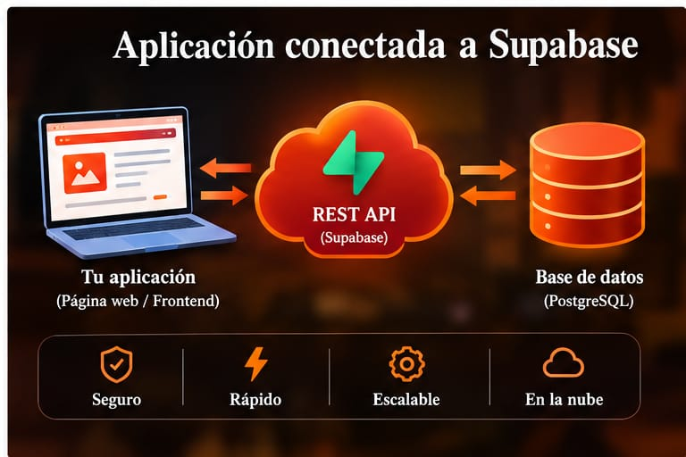
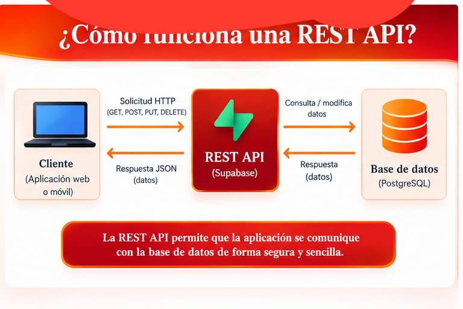

Supabase
Es una plataforma que permite crear servicios de backend y trabajar con bases de datos.
Supabase, Tutorial Práctico y Overview (REST API)
Estudiante: Jorge Barrientos
Curso: 2BTI
En esta tarea aprendi mas sobre la plataforma supabase y con el video aprendi a usar REST API y como proteger lso datos con RLS
Es una plataforma que permite crear servicios de backend y trabajar con bases de datos.
Es el lugar donde se almacenan y organizan diferentes tipos de información.
Permite que una aplicación se comunique con una base de datos mediante solicitudes.
Es un sistema de seguridad que permite controlar quién puede acceder a determinados datos.

Es sobre la plataforma supabase y su forma de utilizar y todas las funcines que tiene y explicar tambien como usar REST API.
Se explica cómo crear un backend y una base de datos para una aplicación sin tener que desarrollar toda la infraestructura desde cero.
Supabase, base de datos, REST API, tablas y RLS.
Supabase, PostgreSQL, REST API y herramientas para realizar pruebas de solicitudes.
Crear un proyecto, crear una tabla, agregar datos, utilizar la REST API y configurar la seguridad.
Se muestra cómo crear tablas y trabajar con sus registros utilizando la API.
Es recomendable conocer conceptos básicos de bases de datos, programación web, API y HTTP.
Facilita la creación de un backend y permite trabajar con bases de datos y diferentes servicios desde una misma plataforma.
Se deben configurar correctamente los permisos y las reglas de seguridad para evitar accesos no autorizados.
Podría utilizarlo para crear una página web escolar que almacene estudiantes, materias, tareas o usuarios.
Considero importante la REST API y la seguridad RLS porque permiten trabajar con los datos y protegerlos.
Aprendí cómo Supabase permite trabajar con bases de datos y cómo una API puede comunicarse con ellas.

Una aplicación práctica sería crear una página web escolar conectada a Supabase. La página podría guardar información de estudiantes, materias y tareas.
El video me ayudó a comprender mejor cómo funcionan las bases de datos, las API y los servicios backend. Supabase me parece una herramienta útil porque facilita el desarrollo de aplicaciones y permite trabajar con información de manera organizada y segura.
Video: Supabase, Tutorial Práctico y Overview (REST API)
Ver video